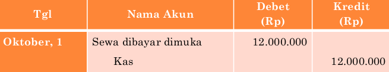
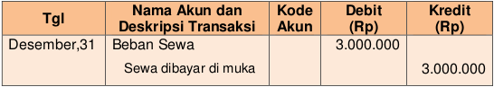

Perusahaan telah membayar uang untuk menggunakan “sesuatu” (berarti biaya) namun pada saat pembayaran, perusahaan belum menggunakan atau memanfaatkannya, sehingga uang perusahaan berkurang, aset (membayar biaya namun belum dinikmati) bertambah. Akun-akun dalam aset tersebut misalnya: sewa dibayar dimuka, asuransi dibayar dimuka, iklan dibayar dimuka, dll
Contoh:
Tanggal 1 Oktober 2017 perusahaan membayar sewa bangunan untuk satu tahun kedepan senilai Rp12.000.000, 00. Sampai tanggal 31 Desember 2017 perusahaan telah menggunakan bangunan selama 3 bulan (1 Oktober 2017-31 Desember 2018) sehingga perusahaan mengakui biaya sewa sebesar : Rp3.000.000,00
Rp12.000.000,00/12 x 3 = Rp3.000.000,00
Jurnal Umum
Jurnal Penyesuaian
